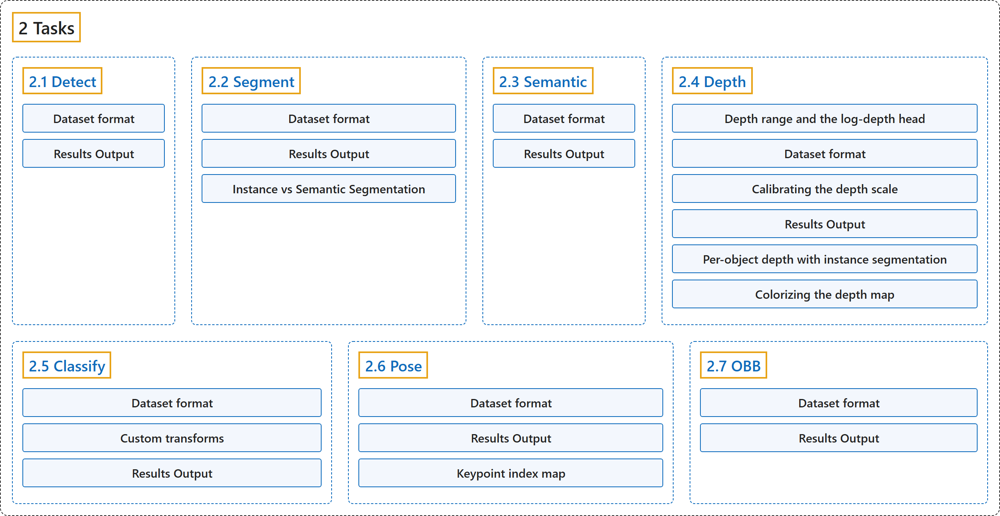

2. Tasks
Classification

Glossary
| Term | Definition | 中文翻译 | Source |
|---|---|---|---|
| 2 Tasks 任务 |
(context) "Ultralytics YOLO26 is a versatile AI framework that supports multiple computer vision tasks. The framework can be used to perform detection, segmentation, semantic segmentation, depth estimation, classification, pose estimation, and OBB." | （语境）Ultralytics YOLO26 是一个支持多种计算机视觉任务的多用途 AI 框架。该框架可以用来做检测、分割、语义分割、深度估计、分类、姿态估计和旋转边界框（OBB）。 | Ultralytics, n.d.-a, "Computer Vision Tasks Supported by Ultralytics YOLO26", para. 1 |
| 2.1 Detect 检测 |
"Object detection is a task that involves identifying the location and class of objects in an image or video stream." | 目标检测是一项识别图像或视频流中物体位置和类别的任务。 | Ultralytics, n.d.-e, "Object Detection with Ultralytics YOLO", para. 1 |
| 2.2 Segment 实例分割 |
"Instance segmentation goes a step further than object detection and involves identifying individual objects in an image and segmenting them from the rest of the image." | 实例分割比目标检测更进一步，要识别图像中的各个物体，并把它们从图像的其余部分中分割出来。 | Ultralytics, n.d.-c, "Instance Segmentation with Ultralytics YOLO", para. 1 |
| 2.3 Semantic 语义分割 |
"Semantic segmentation assigns a class label to every pixel in an image, producing a dense class map that covers the entire scene." | 语义分割给图像中的每个像素分配一个类别标签，生成覆盖整个场景的稠密类别图。 | Ultralytics, n.d.-h, "Semantic Segmentation with Ultralytics YOLO", para. 1 |
| 2.4 Depth 深度估计 |
"Monocular depth estimation predicts a per-pixel depth map from a single RGB image." | 单目深度估计从单张 RGB 图像预测逐像素的深度图。 | Ultralytics, n.d.-d, "Monocular Depth Estimation with Ultralytics YOLO", para. 1 |
| 2.5 Classify 分类 |
"Image classification is the simplest of the supported tasks and involves classifying an entire image into one of a set of predefined classes." | 图像分类是所支持任务中最简单的一种，要把整张图像归入一组预定义类别中的一个。 | Ultralytics, n.d.-b, "Image Classification with Ultralytics YOLO", para. 1 |
| 2.6 Pose 姿态估计 |
"Pose estimation is a task that involves identifying the location of specific points in an image, usually referred to as keypoints." | 姿态估计是一项识别图像中特定点（通常称为关键点）位置的任务。 | Ultralytics, n.d.-g, "Pose Estimation with Ultralytics YOLO", para. 1 |
| 2.7 OBB 旋转边界框检测 |
"Oriented object detection goes a step further than standard object detection by introducing an extra angle to locate objects more accurately in an image." | 旋转目标检测比标准目标检测更进一步，引入一个额外的角度，更准确地定位图像中的物体。 | Ultralytics, n.d.-f, "Oriented Bounding Box Detection with Ultralytics YOLO", para. 1 |
References
Ultralytics. (n.d.-a). Computer Vision Tasks Supported by Ultralytics YOLO26. Ultralytics YOLO Docs (ultralytics 8.4.194). Retrieved October 31, 2026, from https://docs.ultralytics.com/tasks/
Ultralytics. (n.d.-b). Image Classification with Ultralytics YOLO. Ultralytics YOLO Docs (ultralytics 8.4.194). Retrieved October 31, 2026, from https://docs.ultralytics.com/tasks/classify/
Ultralytics. (n.d.-c). Instance Segmentation with Ultralytics YOLO. Ultralytics YOLO Docs (ultralytics 8.4.194). Retrieved October 31, 2026, from https://docs.ultralytics.com/tasks/segment/
Ultralytics. (n.d.-d). Monocular Depth Estimation with Ultralytics YOLO. Ultralytics YOLO Docs (ultralytics 8.4.194). Retrieved October 31, 2026, from https://docs.ultralytics.com/tasks/depth/
Ultralytics. (n.d.-e). Object Detection with Ultralytics YOLO. Ultralytics YOLO Docs (ultralytics 8.4.194). Retrieved October 31, 2026, from https://docs.ultralytics.com/tasks/detect/
Ultralytics. (n.d.-f). Oriented Bounding Box Detection with Ultralytics YOLO. Ultralytics YOLO Docs (ultralytics 8.4.194). Retrieved October 31, 2026, from https://docs.ultralytics.com/tasks/obb/
Ultralytics. (n.d.-g). Pose Estimation with Ultralytics YOLO. Ultralytics YOLO Docs (ultralytics 8.4.194). Retrieved October 31, 2026, from https://docs.ultralytics.com/tasks/pose/
Ultralytics. (n.d.-h). Semantic Segmentation with Ultralytics YOLO. Ultralytics YOLO Docs (ultralytics 8.4.194). Retrieved October 31, 2026, from https://docs.ultralytics.com/tasks/semantic/